Periférico para controlar matriz de led da família WS281x¶
- Alunos: Manoela Cirne Lima de Campos / Wesley Gabriel Albano da Silva
- Curso: Engenharia da Computação
- Semestre: 9
- Contato: manoelaclc@al.insper.edu.br / wesleygas@al.insper.edu.br
- Ano: 2020
Começando¶
Para seguir esse tutorial é necessário:
- Hardware: DE10-Standard e matriz de leds WS2812 AdaFruit
- Softwares: Quartus 18.01
- Documentos: DE10-Standard_User_manual.pdf Funcionamento dos leds
Como funciona a matriz de leds¶
A fita que foi utilizada tem 276 leds e em cada led existem 3 pixeis (RGB na orgem GBR). A intensidade com que cada pixel será acionado ditará a cor de cada led.
Os leds são independentes e têm 24 bits programáveis, 8 para verde, 8 para o azul e 8 para o vermelho. Cada LED coleta os dados utilizando os primeiros 24 bits enviados ao pino DIN, os próximos bits são enviados diretamente para o DOUT, podendo ser utilizado por um outro LED e assim por diante. Cada bit é representado por um sinal de aproximadamente 1300 nano segundos. Um bit 1 corresponde a um sinal com 950 nano segundos em high e 250 nano segundos em low e um bit 0 corresponde a um sinal com 333 nano segundo em high e 977 nano segundos em low.
{kind=link}
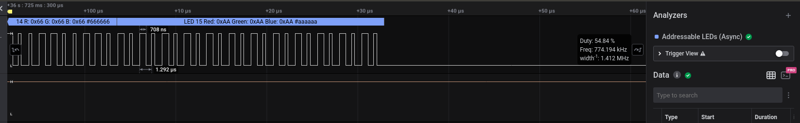
Figura 1 - Tempo de high e low para a escrita do bit 1
Para reiniciar a escrita no led0 deve existir um espaço de tempo entre os pulsos igual ou maior que 70 micro segundos.
{kind=link}
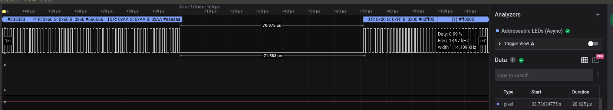
figura 2 - Espaço de tempo entre dados para voltar para o led 0
Para converter isso para a
Na tabela abaixo:
- T0H é tempo em high para bit 0
- T0L é tempo em low para bit 0
- T1H é tempo em high para bit 1
- T1L é tempo em low para bit 1
- RES é tempo em low para voltar ao led0
| Tempo (ns) | Clock (u) | |
|---|---|---|
| T0H | 333 | 17 |
| T0L | 937 | 43 |
| T1H | 958 | 40 |
| T1L | 252 | 20 |
| RES | 70000 | 20000 |
Conectando a matriz de leds na FPGA¶
Para conectar a matriz de led na
Note
- Lembre-se que o ground da placa e da matriz devem estar conectados para que os pulsos sejam detectados corretamente.
{kind=link}
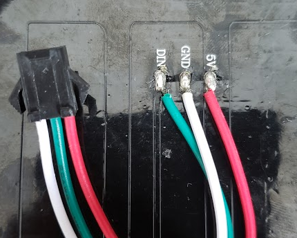
figura 4 - Conectores da matriz de led
Códigos em VHDL¶
Serão necessário 4 códigos em
- Máquina de estados: Define e aplica os tempos de delay dependendo das informações contidas na memória.
- Driver: Conecta a memória e a máquina de estados.
- GlueLogic: Logica de conexão do perifério no barramento Avalon.
- Vram: Memória
Para criar a RAM é necessário seguir os passos a seguir.
Na janela IP Catalog à direita no quartus você encontra a RAM que deve ser configurada.
{kind=link}
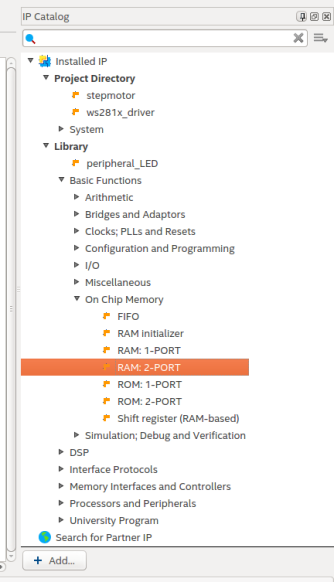
figura 5 - Modelo da RAM
Na próxima etapa deve ser ecolhida uma RAM com escrita e leitura e o tipo de dado deve ser words, para organizar de maneira a facilitar a visualização dos dados.
{kind=link}
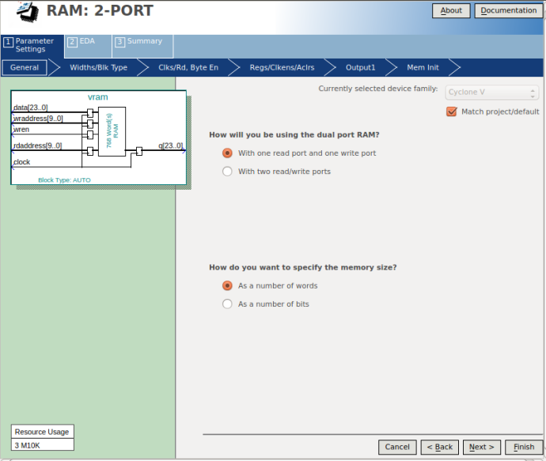
figura 6 - Modelo da RAM
Na próxima etapa deve ser escolhidos dados de 24 bits, que é a informação completa de cada led, como descrito acima.
{kind=link}
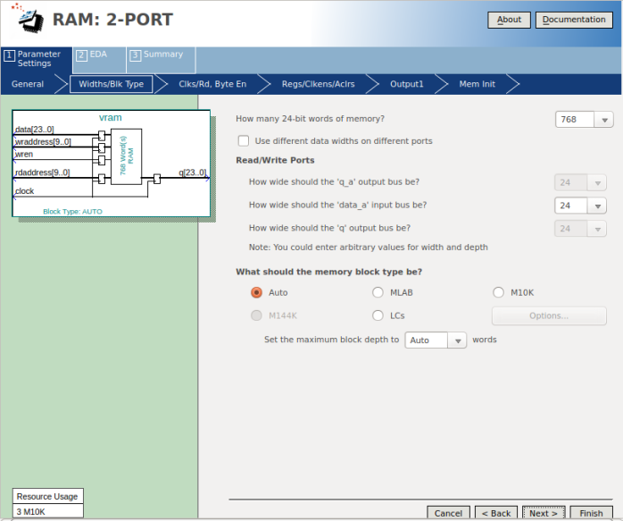
figura 7 - Modelo da RAM
Como só temos um clock na FPGA e todas, manteremos com 1 clock essa configuração.
{kind=link}
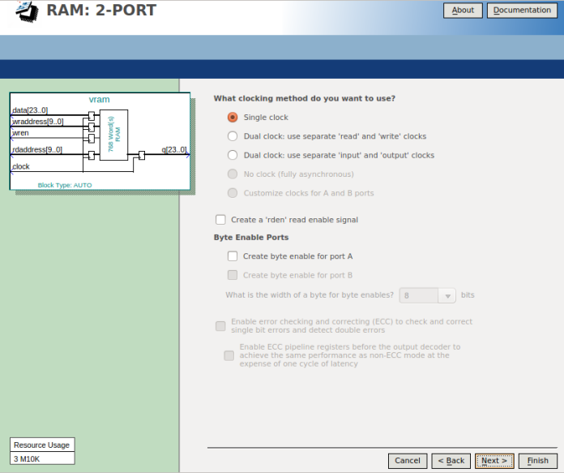
figura 8 - Modelo da RAM
A chance de acontecer uma leitura e uma escrita ao mesmo tempo é baixa e os problemas gerados caso isso aconteça não são relevantes.
{kind=link}
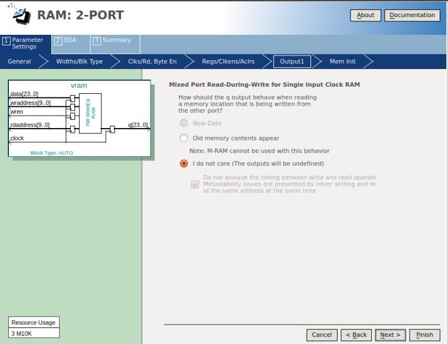
figura 9 - Modelo da RAM
Um arquivo
{kind=link}
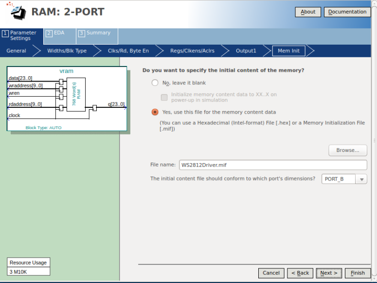
figura 10 - Criar arquivo .mif
{kind=link}
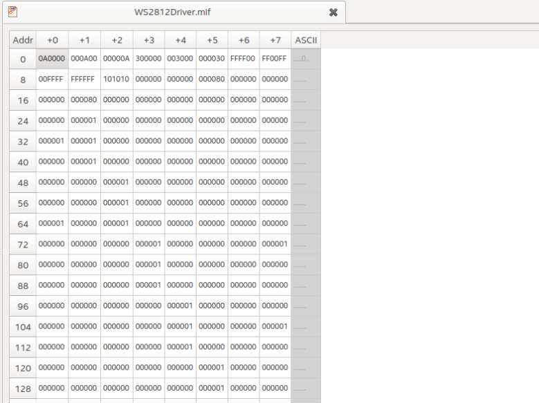
figura 11 - Arquivo .mif criado
A memória criada acima foi modificada para aceitar leitura e escrita simultanemante. O código pronto se encontra abaixo, junto com os outros
library ieee;
use ieee.std_logic_1164.all;
use ieee.numeric_std.all;
entity WS2812 is
generic (
pixel_count : integer := 768;
clock_frequency : integer := 50_000_000 -- Hertz
);
port (
clk : in std_logic;
rst : in std_logic;
data : in std_logic_vector(23 downto 0); -- for testbench validation only
addr : out std_logic_vector(9 downto 0);
serial : out std_logic
);
end entity WS2812;
architecture arch of WS2812 is
constant T0H : integer := 17;
constant T0L : integer := 43; -- compensate for state changes
constant T1H : integer := 40;
constant T1L : integer := 20; -- compensate for state changes
constant RES : integer := 20000;
--type LED_ring is array (0 to (pixel_count - 1)) of std_logic_vector(23 downto 0);
type state_machine is (load, sending, send_bit, reset);
begin
process
variable state : state_machine := reset;
variable GRB : std_logic_vector(23 downto 0) := x"000000";
variable delay_high_counter : integer := 0;
variable delay_low_counter : integer := 0;
variable index : integer := 0;
variable bit_counter : integer := 0;
begin
wait until rising_edge(clk);
case state is
when load => -- Update GRB with data coming from RAM
GRB := data;
bit_counter := 24;
state := sending;
when sending =>
if (bit_counter > 0) then
bit_counter := bit_counter - 1;
if GRB(bit_counter) = '1' then
delay_high_counter := T1H;
delay_low_counter := T1L;
else
delay_high_counter := T0H;
delay_low_counter := T0L;
end if;
state := send_bit;
else
if (index < (pixel_count - 1)) then
index := index + 1;
addr <= std_logic_vector(to_unsigned(index, addr'length));
state := load;
else
delay_low_counter := RES;
state := reset;
end if;
end if;
when send_bit =>
if (delay_high_counter > 0) then
serial <= '1';
delay_high_counter := delay_high_counter - 1;
elsif (delay_low_counter > 0) then
serial <= '0';
delay_low_counter := delay_low_counter - 1;
else
state := sending;
end if;
when reset =>
if (delay_low_counter > 0) then
serial <= '0';
delay_low_counter := delay_low_counter - 1;
else
index := 0;
addr <= std_logic_vector(to_unsigned(index, addr'length));
state := load;
end if;
when others => null;
end case;
end process;
end arch;
library IEEE;
use IEEE.std_logic_1164.all;
entity WS2812Driver is
port (
-- Gloabals
clock : in std_logic;
reset : in std_logic;
-- I/Os
led_serial_out : out std_logic;
wraddress : in std_logic_vector(9 downto 0);
input_data : in std_logic_vector(23 downto 0);
wren : in std_logic
);
end entity WS2812Driver;
architecture rtl of WS2812Driver is
signal debug_led : std_logic_vector(23 downto 0) := (others => '0');
signal driver_data : std_logic_vector(23 downto 0) := (others => 'X');
signal raddress : std_logic_vector(9 downto 0);
component WS2812 is
generic (
pixel_count : integer := 768;
clock_frequency : integer := 50_000_000 -- Hertz
);
port (
clk : in std_logic := 'X';
rst : in std_logic := '0';
data : in std_logic_vector(23 downto 0) := (others => 'X');
addr : out std_logic_vector(9 downto 0);
serial : out std_logic := '1'
);
end component WS2812;
component vram
PORT
(
clock : IN STD_LOGIC := '1';
data : IN STD_LOGIC_VECTOR (23 DOWNTO 0);
rdaddress : IN STD_LOGIC_VECTOR (9 DOWNTO 0);
wraddress : IN STD_LOGIC_VECTOR (9 DOWNTO 0);
wren : IN STD_LOGIC := '0';
q : OUT STD_LOGIC_VECTOR (23 DOWNTO 0)
);
end component;
begin
d0 : component vram
port map (
clock => clock,
data => input_data,
rdaddress => raddress,
wraddress => wraddress,
wren => wren,
q => driver_data
);
d1 : component WS2812
generic map (
pixel_count => 768,
clock_frequency => 50_000_000
)
port map (
clk => clock,
rst => reset,
data => driver_data,
addr => raddress,
serial => led_serial_out
);
end rtl;
library IEEE;
use IEEE.std_logic_1164.all;
entity ws281x_MM is
port (
-- Globals
clk : in std_logic := '0';
reset : in std_logic := '0';
serial_out : out std_logic;
-- Avalon Memmory Mapped Slave
avs_address : in std_logic_vector(9 downto 0) := (others => '0');
avs_read : in std_logic := '0';
avs_readdata : out std_logic_vector(31 downto 0) := (others => '0');
avs_write : in std_logic := '0';
avs_writedata : in std_logic_vector(31 downto 0) := (others => '0')
);
end entity ws281x_MM;
architecture rtl of ws281x_MM is
component WS2812Driver is
port (
-- Gloabals
clock : in std_logic;
reset : in std_logic;
-- I/Os
led_serial_out : out std_logic;
wraddress : in std_logic_vector(9 downto 0);
input_data : in std_logic_vector(23 downto 0);
wren : in std_logic
);
end component WS2812Driver;
begin
dd : component WS2812Driver
port map (
clock => clk,
reset => reset,
led_serial_out => serial_out,
wraddress => avs_address,
input_data => avs_writedata(23 downto 0),
wren => avs_write
);
end rtl;
-- megafunction wizard: %RAM: 2-PORT%
-- GENERATION: STANDARD
-- VERSION: WM1.0
-- MODULE: altsyncram
-- ============================================================
-- File Name: vram.vhd
-- Megafunction Name(s):
-- altsyncram
--
-- Simulation Library Files(s):
-- altera_mf
-- ============================================================
-- ************************************************************
-- THIS IS A WIZARD-GENERATED FILE. DO NOT EDIT THIS FILE!
--
-- 18.1.0 Build 625 09/12/2018 SJ Standard Edition
-- ************************************************************
--Copyright (C) 2018 Intel Corporation. All rights reserved.
--Your use of Intel Corporation's design tools, logic functions
--and other software and tools, and its AMPP partner logic
--functions, and any output files from any of the foregoing
--(including device programming or simulation files), and any
--associated documentation or information are expressly subject
--to the terms and conditions of the Intel Program License
--Subscription Agreement, the Intel Quartus Prime License Agreement,
--the Intel FPGA IP License Agreement, or other applicable license
--agreement, including, without limitation, that your use is for
--the sole purpose of programming logic devices manufactured by
--Intel and sold by Intel or its authorized distributors. Please
--refer to the applicable agreement for further details.
LIBRARY ieee;
USE ieee.std_logic_1164.all;
LIBRARY altera_mf;
USE altera_mf.altera_mf_components.all;
ENTITY vram IS
PORT
(
clock : IN STD_LOGIC := '1';
data : IN STD_LOGIC_VECTOR (23 DOWNTO 0);
rdaddress : IN STD_LOGIC_VECTOR (9 DOWNTO 0);
wraddress : IN STD_LOGIC_VECTOR (9 DOWNTO 0);
wren : IN STD_LOGIC := '0';
q : OUT STD_LOGIC_VECTOR (23 DOWNTO 0)
);
END vram;
ARCHITECTURE SYN OF vram IS
SIGNAL sub_wire0 : STD_LOGIC_VECTOR (23 DOWNTO 0);
BEGIN
q <= sub_wire0(23 DOWNTO 0);
altsyncram_component : altsyncram
GENERIC MAP (
address_aclr_b => "NONE",
address_reg_b => "CLOCK0",
clock_enable_input_a => "BYPASS",
clock_enable_input_b => "BYPASS",
clock_enable_output_b => "BYPASS",
init_file => "WS2812Driver.mif",
intended_device_family => "Cyclone V",
lpm_type => "altsyncram",
numwords_a => 768,
numwords_b => 768,
operation_mode => "DUAL_PORT",
outdata_aclr_b => "NONE",
outdata_reg_b => "CLOCK0",
power_up_uninitialized => "FALSE",
read_during_write_mode_mixed_ports => "DONT_CARE",
widthad_a => 10,
widthad_b => 10,
width_a => 24,
width_b => 24,
width_byteena_a => 1
)
PORT MAP (
address_a => wraddress,
address_b => rdaddress,
clock0 => clock,
data_a => data,
wren_a => wren,
q_b => sub_wire0
);
END SYN;
-- ============================================================
-- CNX file retrieval info
-- ============================================================
-- Retrieval info: PRIVATE: ADDRESSSTALL_A NUMERIC "0"
-- Retrieval info: PRIVATE: ADDRESSSTALL_B NUMERIC "0"
-- Retrieval info: PRIVATE: BYTEENA_ACLR_A NUMERIC "0"
-- Retrieval info: PRIVATE: BYTEENA_ACLR_B NUMERIC "0"
-- Retrieval info: PRIVATE: BYTE_ENABLE_A NUMERIC "0"
-- Retrieval info: PRIVATE: BYTE_ENABLE_B NUMERIC "0"
-- Retrieval info: PRIVATE: BYTE_SIZE NUMERIC "8"
-- Retrieval info: PRIVATE: BlankMemory NUMERIC "0"
-- Retrieval info: PRIVATE: CLOCK_ENABLE_INPUT_A NUMERIC "0"
-- Retrieval info: PRIVATE: CLOCK_ENABLE_INPUT_B NUMERIC "0"
-- Retrieval info: PRIVATE: CLOCK_ENABLE_OUTPUT_A NUMERIC "0"
-- Retrieval info: PRIVATE: CLOCK_ENABLE_OUTPUT_B NUMERIC "0"
-- Retrieval info: PRIVATE: CLRdata NUMERIC "0"
-- Retrieval info: PRIVATE: CLRq NUMERIC "0"
-- Retrieval info: PRIVATE: CLRrdaddress NUMERIC "0"
-- Retrieval info: PRIVATE: CLRrren NUMERIC "0"
-- Retrieval info: PRIVATE: CLRwraddress NUMERIC "0"
-- Retrieval info: PRIVATE: CLRwren NUMERIC "0"
-- Retrieval info: PRIVATE: Clock NUMERIC "0"
-- Retrieval info: PRIVATE: Clock_A NUMERIC "0"
-- Retrieval info: PRIVATE: Clock_B NUMERIC "0"
-- Retrieval info: PRIVATE: IMPLEMENT_IN_LES NUMERIC "0"
-- Retrieval info: PRIVATE: INDATA_ACLR_B NUMERIC "0"
-- Retrieval info: PRIVATE: INDATA_REG_B NUMERIC "0"
-- Retrieval info: PRIVATE: INIT_FILE_LAYOUT STRING "PORT_B"
-- Retrieval info: PRIVATE: INIT_TO_SIM_X NUMERIC "0"
-- Retrieval info: PRIVATE: INTENDED_DEVICE_FAMILY STRING "Cyclone V"
-- Retrieval info: PRIVATE: JTAG_ENABLED NUMERIC "0"
-- Retrieval info: PRIVATE: JTAG_ID STRING "NONE"
-- Retrieval info: PRIVATE: MAXIMUM_DEPTH NUMERIC "0"
-- Retrieval info: PRIVATE: MEMSIZE NUMERIC "18432"
-- Retrieval info: PRIVATE: MEM_IN_BITS NUMERIC "0"
-- Retrieval info: PRIVATE: MIFfilename STRING "WS2812Driver.mif"
-- Retrieval info: PRIVATE: OPERATION_MODE NUMERIC "2"
-- Retrieval info: PRIVATE: OUTDATA_ACLR_B NUMERIC "0"
-- Retrieval info: PRIVATE: OUTDATA_REG_B NUMERIC "1"
-- Retrieval info: PRIVATE: RAM_BLOCK_TYPE NUMERIC "0"
-- Retrieval info: PRIVATE: READ_DURING_WRITE_MODE_MIXED_PORTS NUMERIC "2"
-- Retrieval info: PRIVATE: READ_DURING_WRITE_MODE_PORT_A NUMERIC "3"
-- Retrieval info: PRIVATE: READ_DURING_WRITE_MODE_PORT_B NUMERIC "3"
-- Retrieval info: PRIVATE: REGdata NUMERIC "1"
-- Retrieval info: PRIVATE: REGq NUMERIC "0"
-- Retrieval info: PRIVATE: REGrdaddress NUMERIC "1"
-- Retrieval info: PRIVATE: REGrren NUMERIC "1"
-- Retrieval info: PRIVATE: REGwraddress NUMERIC "1"
-- Retrieval info: PRIVATE: REGwren NUMERIC "1"
-- Retrieval info: PRIVATE: SYNTH_WRAPPER_GEN_POSTFIX STRING "0"
-- Retrieval info: PRIVATE: USE_DIFF_CLKEN NUMERIC "0"
-- Retrieval info: PRIVATE: UseDPRAM NUMERIC "1"
-- Retrieval info: PRIVATE: VarWidth NUMERIC "0"
-- Retrieval info: PRIVATE: WIDTH_READ_A NUMERIC "24"
-- Retrieval info: PRIVATE: WIDTH_READ_B NUMERIC "24"
-- Retrieval info: PRIVATE: WIDTH_WRITE_A NUMERIC "24"
-- Retrieval info: PRIVATE: WIDTH_WRITE_B NUMERIC "24"
-- Retrieval info: PRIVATE: WRADDR_ACLR_B NUMERIC "0"
-- Retrieval info: PRIVATE: WRADDR_REG_B NUMERIC "0"
-- Retrieval info: PRIVATE: WRCTRL_ACLR_B NUMERIC "0"
-- Retrieval info: PRIVATE: enable NUMERIC "0"
-- Retrieval info: PRIVATE: rden NUMERIC "0"
-- Retrieval info: LIBRARY: altera_mf altera_mf.altera_mf_components.all
-- Retrieval info: CONSTANT: ADDRESS_ACLR_B STRING "NONE"
-- Retrieval info: CONSTANT: ADDRESS_REG_B STRING "CLOCK0"
-- Retrieval info: CONSTANT: CLOCK_ENABLE_INPUT_A STRING "BYPASS"
-- Retrieval info: CONSTANT: CLOCK_ENABLE_INPUT_B STRING "BYPASS"
-- Retrieval info: CONSTANT: CLOCK_ENABLE_OUTPUT_B STRING "BYPASS"
-- Retrieval info: CONSTANT: INIT_FILE STRING "WS2812Driver.mif"
-- Retrieval info: CONSTANT: INTENDED_DEVICE_FAMILY STRING "Cyclone V"
-- Retrieval info: CONSTANT: LPM_TYPE STRING "altsyncram"
-- Retrieval info: CONSTANT: NUMWORDS_A NUMERIC "768"
-- Retrieval info: CONSTANT: NUMWORDS_B NUMERIC "768"
-- Retrieval info: CONSTANT: OPERATION_MODE STRING "DUAL_PORT"
-- Retrieval info: CONSTANT: OUTDATA_ACLR_B STRING "NONE"
-- Retrieval info: CONSTANT: OUTDATA_REG_B STRING "CLOCK0"
-- Retrieval info: CONSTANT: POWER_UP_UNINITIALIZED STRING "FALSE"
-- Retrieval info: CONSTANT: READ_DURING_WRITE_MODE_MIXED_PORTS STRING "DONT_CARE"
-- Retrieval info: CONSTANT: WIDTHAD_A NUMERIC "10"
-- Retrieval info: CONSTANT: WIDTHAD_B NUMERIC "10"
-- Retrieval info: CONSTANT: WIDTH_A NUMERIC "24"
-- Retrieval info: CONSTANT: WIDTH_B NUMERIC "24"
-- Retrieval info: CONSTANT: WIDTH_BYTEENA_A NUMERIC "1"
-- Retrieval info: USED_PORT: clock 0 0 0 0 INPUT VCC "clock"
-- Retrieval info: USED_PORT: data 0 0 24 0 INPUT NODEFVAL "data[23..0]"
-- Retrieval info: USED_PORT: q 0 0 24 0 OUTPUT NODEFVAL "q[23..0]"
-- Retrieval info: USED_PORT: rdaddress 0 0 10 0 INPUT NODEFVAL "rdaddress[9..0]"
-- Retrieval info: USED_PORT: wraddress 0 0 10 0 INPUT NODEFVAL "wraddress[9..0]"
-- Retrieval info: USED_PORT: wren 0 0 0 0 INPUT GND "wren"
-- Retrieval info: CONNECT: @address_a 0 0 10 0 wraddress 0 0 10 0
-- Retrieval info: CONNECT: @address_b 0 0 10 0 rdaddress 0 0 10 0
-- Retrieval info: CONNECT: @clock0 0 0 0 0 clock 0 0 0 0
-- Retrieval info: CONNECT: @data_a 0 0 24 0 data 0 0 24 0
-- Retrieval info: CONNECT: @wren_a 0 0 0 0 wren 0 0 0 0
-- Retrieval info: CONNECT: q 0 0 24 0 @q_b 0 0 24 0
-- Retrieval info: GEN_FILE: TYPE_NORMAL vram.vhd TRUE
-- Retrieval info: GEN_FILE: TYPE_NORMAL vram.inc FALSE
-- Retrieval info: GEN_FILE: TYPE_NORMAL vram.cmp TRUE
-- Retrieval info: GEN_FILE: TYPE_NORMAL vram.bsf FALSE
-- Retrieval info: GEN_FILE: TYPE_NORMAL vram_inst.vhd TRUE
-- Retrieval info: LIB_FILE: altera_mf
Como vamos criar o periférico no PD (Plataform Designer), vamos colocar todos esses arquivos em uma pasta chamada IP localizada na raíz do projeto, já que o PD integra IPs.
O que temos em cada arquivo
Máquina de estados:¶
- pixel_count: A quantidade de pixeis que serão modificados. No nosso caso o total da matriz.
- clock_frequency: A frequência do clock da
FPGA (para ser utilizado nos cálculos de espaço de tempo entre os bits 1 e 0 para representar a informação que será recebida pela matriz) - clk: Entrada do clock.
- rst: É necessário para criar o periférico, mas não faz nada a princípio
- data: Informação vinda da mamória para ser processada e enviada para a matriz de led.
- addr: Endereço da memória que deve ser acessado.
- serial: Saída que vai para a matriz de led com os dados já processados.
Driver:¶
- clk: Entrada do clock.
- reset: É necessário para criar o periférico, mas não faz nada a princípio
- led_serial_out: Saída da máquina de estados que será enviada para placa com dados processados (um bit por vez).
- input_data: Informação que será escrita na memória.
- raddress: Endereço de leitura da memória.
- wraddress: Endereço da memória que deve ser acessado para escrita de informações vinda do avalon.
- wren: Enable para escrever na mamória.
- Esse VHDL fará as conexões entre a memória e a máquina de estados que processa a informação para entregar os dados corretamente para a matriz de leds
Glue-Logic:¶
- clk: Entrada do clock.
- rst: É necessário para criar o periférico, mas não faz nada a princípio
- serial_out: Saída que vai para a matriz de led com um bit de cada vez processados pelo driver.
- avs_address: Endereço que deve ser acessado na memória.
- avs_read: Enable de leitura da memória.
- avs_readdata: Saída da informação lida da memória que deve ser passada para o driver
- avs_write: Enable de escrita da memória
- avs_writedata: Informação que deve ser ecrita na memória
- O Glue Logic faz a abstração do acesso à memória pelo periférico. Dessa forma cada funcionalidade necessária (write, read) tem um offset na mamória para que seja utilizado.
Criação do pereférico no plataform designer¶
Abra o Plataform designer e adicione os seguintes componentes:
* On-Chip Memory (RAM or ROM Intel FPGA IP)
* Type: RAM
* Total Memory size: 65536 bytes
* On-Chip Memory (RAM or ROM Intel FPGA IP)
* Type: RAM
* Total Memory size: 65536 bytes
* Jtag UART Intel FPGA IP
* Default
* NIOS II Processor
* Type: NIOS II/e
Para inciar a criação do componente que controlará a matriz de leds será necessário "avisar" o plataform designer que a pasta IP guarda os arquivos que devem ser buscados. Para isso isso vá em tools → options → IP Search Path e adicione a pasta criada acima.
Depois crie o seguinte componente:
Na primeira aba nomeie o componente e preencha sua descrição.
{kind=link}
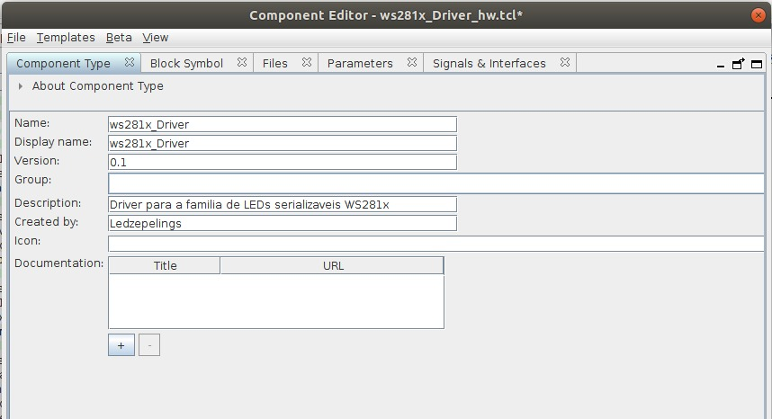
Figura 12 - plataform designer - parte1
Na aba files → Syntesis Files → add file adicione os arquivos .vhd descritos na seção anterior. Na janela VHDL Simulation Files selecione a opção Copy From Syntesis Files.
{kind=link}
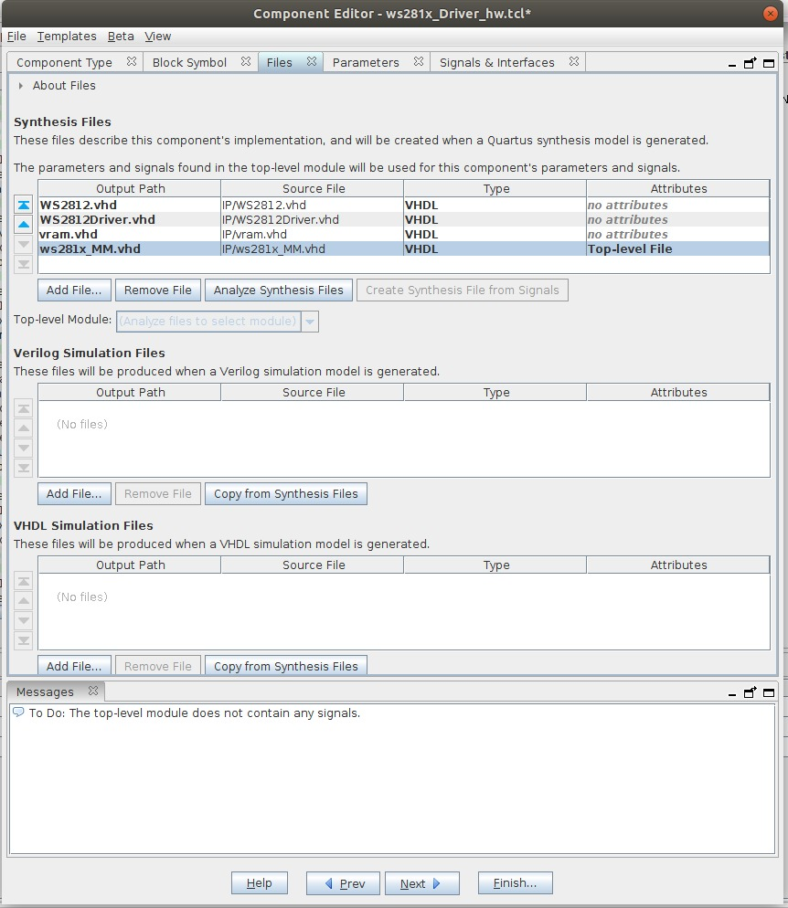
Figura 13 - plataform designer - parte2
Na aba signals coloque conduit_end na serial_out para que esse sinal seja reconhecido como uma saída do periférico na
{kind=link}
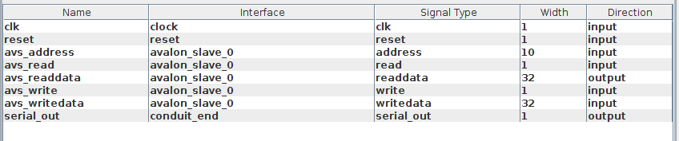
Figura 14 - plataform designer - parte3
Na aba signal & interfaces o reset deve ser atrelado ao avalon_slave_0.
{kind=link}
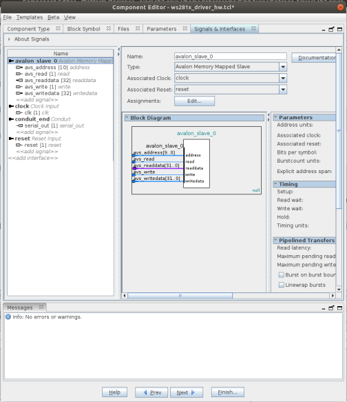
Figura 15 - plataform designer - parte4
clique em finish.
O componente aparecerá na janela IP Catalog. Um arquivo
add_fileset_file nomedoarquivo.vhd VHDL PATH IP/nomedoarquivo.vhd TOP_LEVEL_FILE
...
add_fileset_file nomedoarquivo.vhd VHDL PATH IP/nomedoarquivo.vhd
add_fileset_file nomedoarquivo.vhd VHDL PATH nomedoarquivo.vhd TOP_LEVEL_FILE
...
add_fileset_file nomedoarquivo.vhd VHDL PATH nomedoarquivo.vhd
Adicione o periférico criado e faça as conexões com os outros periféricos como no exemplo abaixo:
{kind=link}
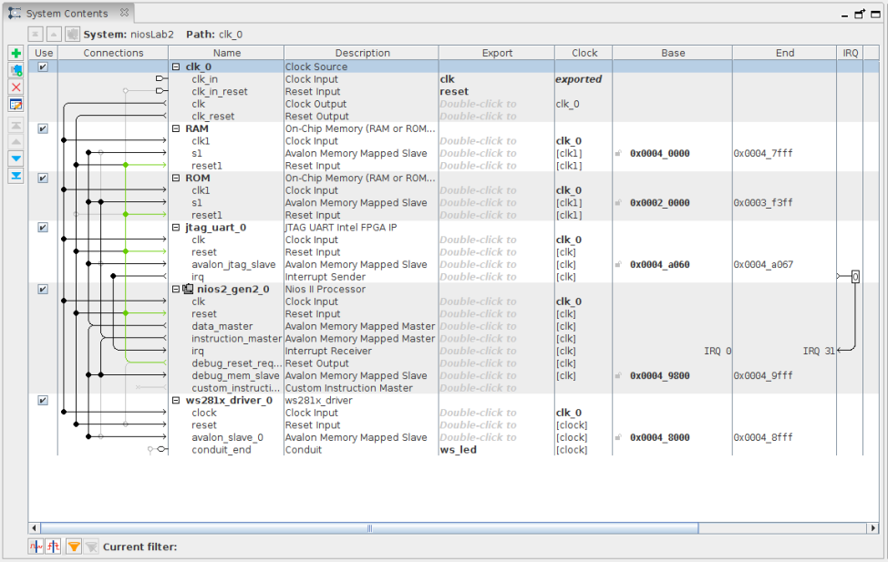
Figura 16 - plataform designer - parte5
Clique em Generate HDL → Generate para gerar o componente e use a opção create simulation model com
No Generate → Show Instatiation Template → VHDL o modelo de código do periférico será apresentado e deve ser copiado para o uso do periférico. Como esse projeto foi criado sobre um feito anteriormente o nome da entidade não o ideal. O código abaixo já foi modificado para funcionar corretamente com o NIOS.
Warning
Ao copiar o código lembre de trocar os nomes para que eles correspondam com o seu projeto.
library IEEE;
use IEEE.std_logic_1164.all;
entity LAB2_FPGA_NIOS is
port (
-- Gloabals
fpga_clk_50 : in std_logic; -- clock.clk
-- I/Os
stepmotor_pio : out std_logic_vector(3 downto 0) := (others => '0')
);
end entity LAB2_FPGA_NIOS;
architecture rtl of LAB2_FPGA_NIOS is
signal led_serial : std_logic;
component niosLab2 is
port (
clk_clk : in std_logic := 'X'; -- clk
reset_reset_n : in std_logic := 'X'; -- reset_n
ws_led_serial_out : out std_logic -- serial_out
);
end component niosLab2;
begin
stepmotor_pio(0) <= led_serial;
u0 : component niosLab2 port map (
clk_clk => fpga_clk_50, -- clk.clk
reset_reset_n => '1', -- reset.reset_n
ws_led_serial_out => led_serial -- ws_led.serial_out
);
end rtl;
Depois de criar o novo arquivo de top level compile o projeto e programe a
{kind=link}
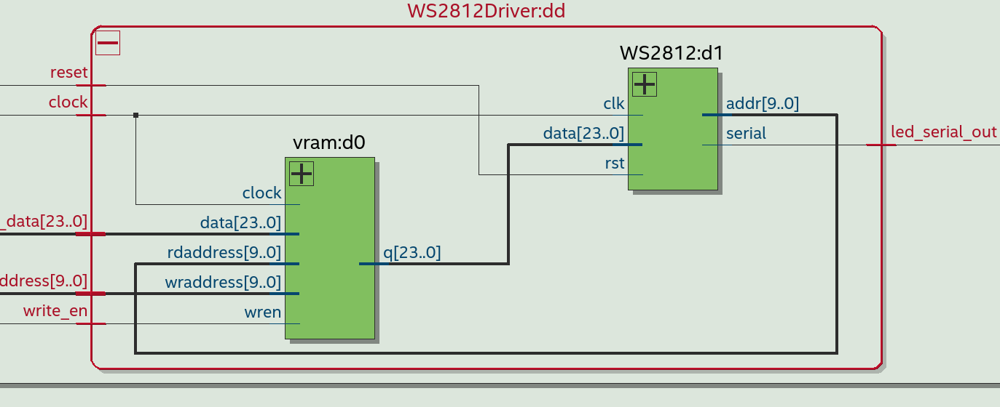
Figura 17 - RTL
O componente WS2812 deve ler os endereços da memória, processar a informação como descrito nos códigos em
Firmware (NIOS)¶
Abra o NIOS II Software Build para criar um código que utiliza o periférico criado. Um código de exemplo pode ser encontrado abaixo.
hello_world.c
#include "system.h"
#include <stdio.h>
#include <io.h> /* Leiutura e escrita no Avalon */
#include <unistd.h>
int main()
{
printf("Hello from Nios II!\n");
volatile unsigned int *led_driver = (unsigned int *) WS281X_DRIVER_0_BASE;
while(1){
unsigned int led_data = 0x000F0005; //Cor inicial
unsigned int max_led = 24;
for(unsigned int i = 0; i < max_led; i++){
IOWR_32DIRECT(WS281X_DRIVER_0_BASE, i, led_data);
printf("writing to LED %d!\n");
//
}
usleep(1000000);
led_data = 0x0000FFFF; //Cor segundária
for(unsigned int i = 0; i < max_led; i++){
IOWR_32DIRECT(WS281X_DRIVER_0_BASE, i, led_data);
printf("writing to LED\n");
usleep(500000);
}
}
return 0;
}
Para usar esse periférico diretamente com um driver do linux algumas modificações precisam ser feitas. Faça o download do projeto necessário aqui. Baixe o projeto e inclua o seu periférico nele.
Na imagem abaixo é possível ver como as conexões devem ser feitas. A mm_bridge_0 faz o processamento dos dados para que tudo funcione corretamente no linux.
{kind=link}
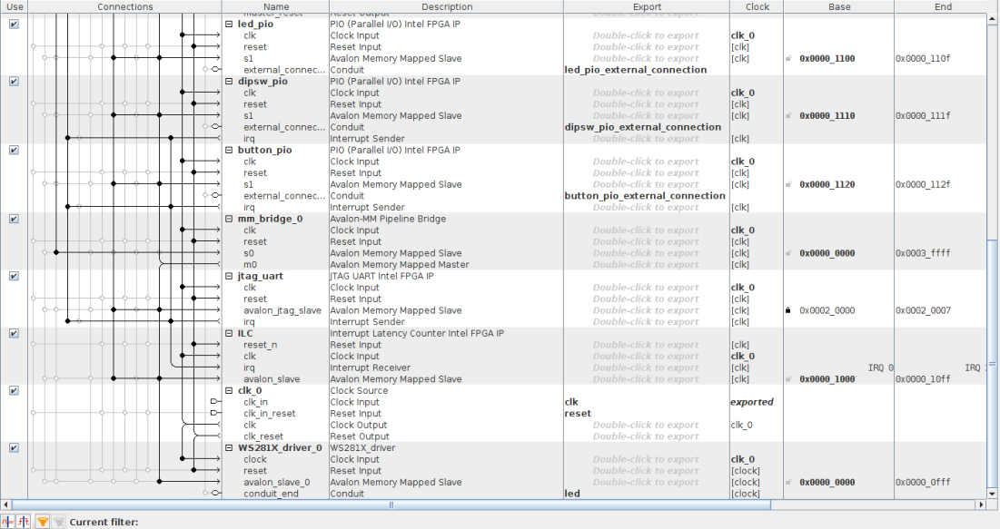
Figura 18 - Plataform designer para periférico funcinando para driver do linux
Para criar o driver de linux que funcione com esse periférico existe um tutorial pronto feito pelos alunos Andre Ejsenmesser e Paulo Tozzo Ponciano para a matéria de SOC e Linux Embarcado no ano de 2020.